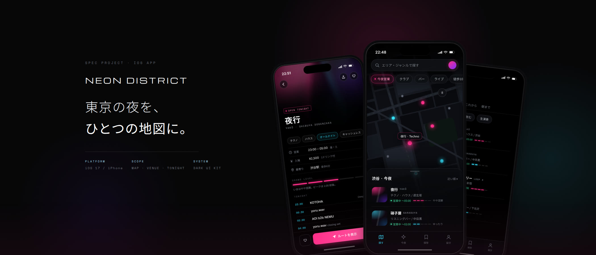
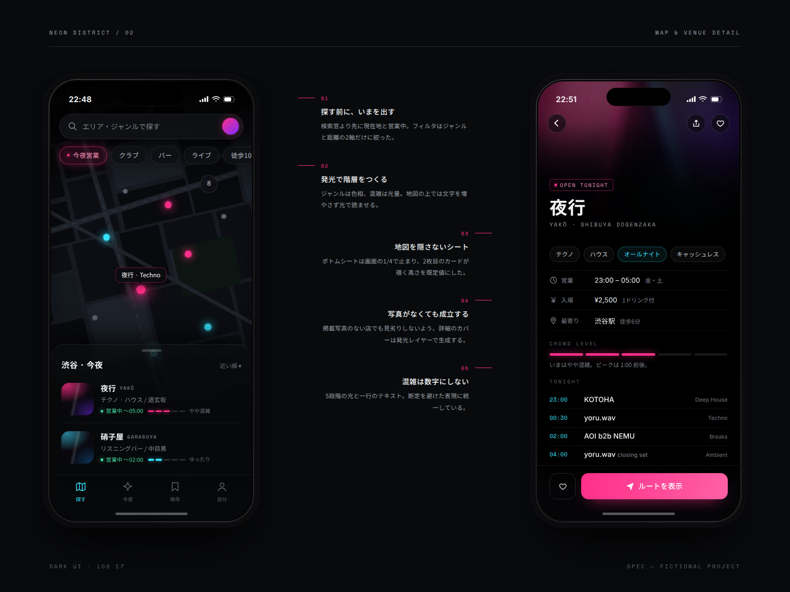
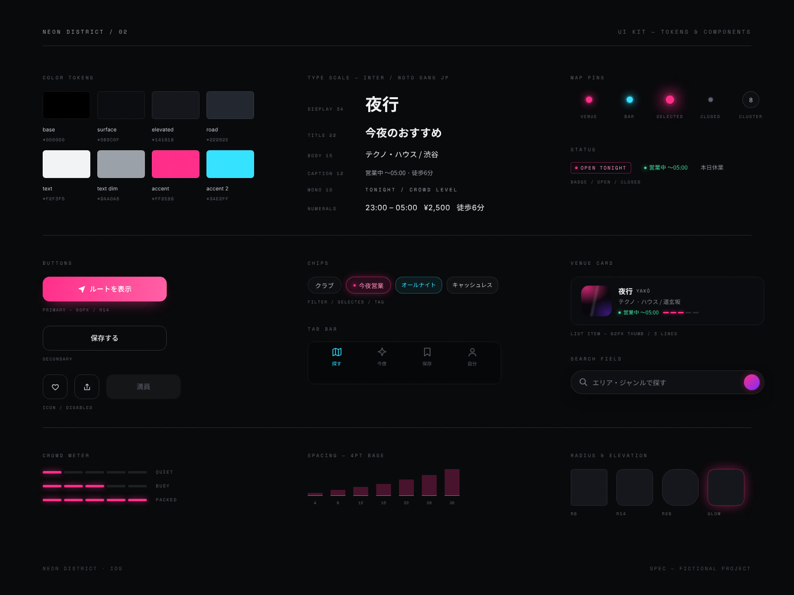
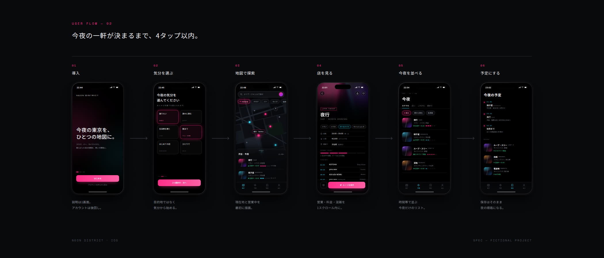

東京のナイトライフ検索アプリ。地図・店舗詳細・今夜のリストの3画面だけで「今夜どこへ行くか」を決めきるための、iOSアプリのコンセプト。
架空のプロジェクトです。実在のクライアント・実績ではありません。

「今夜どこへ行くか」を決める材料は、SNSと口コミに散らばったままだ。Neon District は、その判断を地図・店舗詳細・今夜のリストの3画面だけで完結させることを条件に組み立てた iOS アプリのコンセプトである。
起点に置いたのは検索ではなく「いまの状態」。開いた瞬間に現在地と営業中の店が描画され、絞り込む前にすでに選択肢が見えている。フィルタはジャンルと距離の2軸だけに削り、迷う前に一軒目が決まる導線を優先した。


真っ黒の地にマゼンタとシアンを最小限だけ置く。ジャンルは色相、混雑は光量で表し、地図の上に文字を足さずに階層をつくった。掲載写真のない店でも見劣りしないよう、詳細画面のカバーは写真ではなく発光レイヤーで生成する方式にしている。
混雑度は数値ではなく5段階の光と一行のテキスト。断定を避けた表現に統一した。ボトムシートは画面の1/4で止まり、2枚目のカードが覗く高さを既定値に。地図を隠さないこと、タップを増やさないことを最後まで優先している。

設計したのは導入 / 気分選択 / 地図 / 店舗詳細 / 今夜のリスト / 予定（保存）の6画面。あわせてカラートークン、タイポグラフィスケール、ボタン・チップ・マップピン・カードのコンポーネントシートと、ユーザーフローのボードを制作した。
本ページは構想（Spec）です。画面に登場する店名・出演者名・地図はすべてこの案のために作った架空のもので、実在の店舗や人物とは関係ありません。効果・売上・利用者数などの実績値は一切掲載していません。